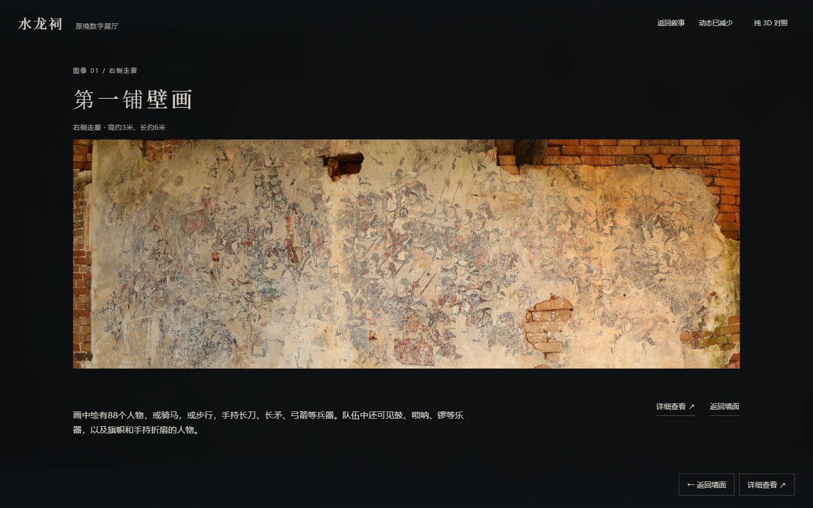
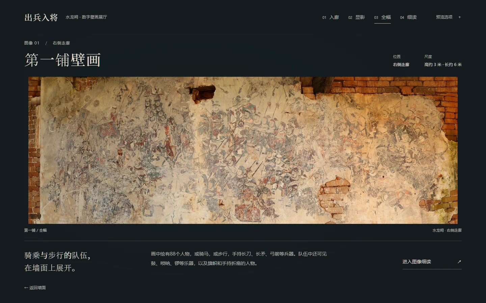
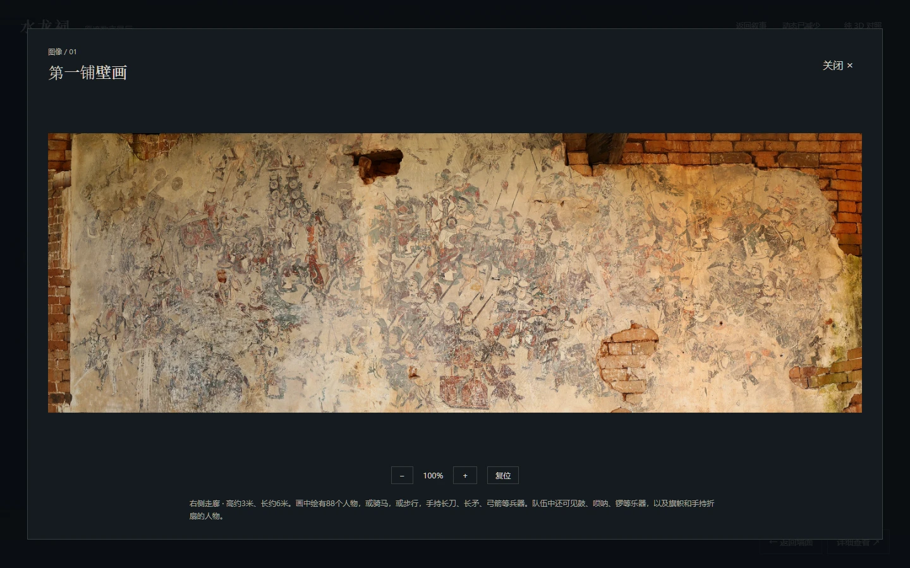
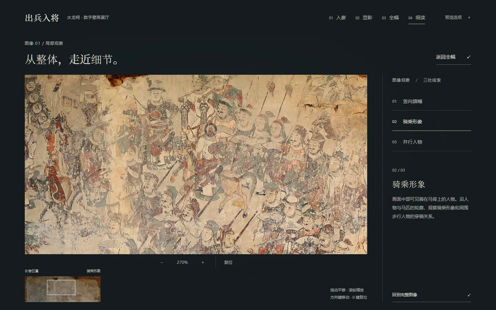

内部数字展厅 / 视觉研究 V2
前两列 AI 方向均由对应的 Combined B 实机空墙渲染编辑生成。生成图仍有结构漂移，因此只从安全表面中提取视觉层。最右列是浏览器中的实际几何投影融合，建筑轮廓、壁画与遮挡来自原模型。
A · 自然质感更强调材料颗粒，部分地面接缝和墙脚处理偏重。B · 艺术氛围的明暗关系较柔和，本轮选为默认候选。整景 AI 图属于视觉参考，不能视为已经实现的动态整景。



